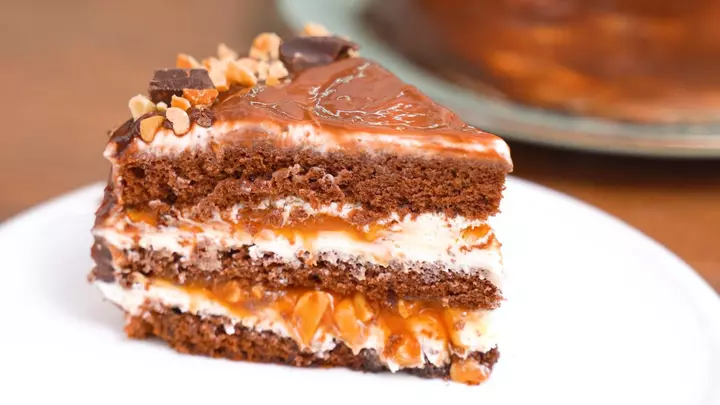

Tort "Snickers"
"Używamy naturalnych orzeszków ziemnych do naszego solonego karmelu i nadzienia z orzeszków ziemnych.
To ciasto jest oparte na popularnym batoniku "Snickers" i powtarza jego oryginalną strukturę i smak.
Nasi szefowie kuchni od dawna szukają idealnego przepisu na powtórzenie wszystkich nut smakowych."
Skład tortu:

Biszkopt:
Mąka-190g
Jajko kurze -1szt.
Cukier-200g
Mleko-75ml
Kawa rozpuszczalna-2 łyżki. l.
Woda (wrzątek)-200ml
Proszek do pieczenia-1 łyżeczka
Soda-1/4 łyżeczki-
Ganache:
Czekolada ciemny-180 g
Śmietana tłuszczowa(30%)-180g
Do kremu:
Mleko skondensowane gotowane-380g
Masło-180 g
Dodatkowy:
Orzeszki ziemne prażone(solone)~200g
Karmel solony~200g
Waga:700g
Cena: 70Zł